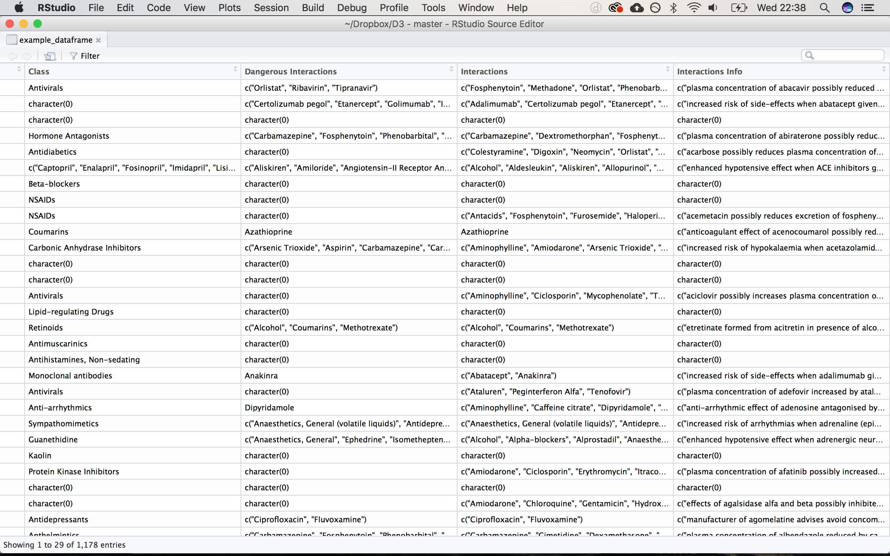

Interactions Continued
BNF
I made a few additions to my previous post, after realising I could use the CSS selector to list the interaction information. (I.e if you combine drugs, will it increase the blood concentration of the other? Or reduce it? Or risk a given side-effect, etc..)
I built this into the previous code. (See the full code).
#Interactions
interactions <- mapply(url = data, css = drugs_list$css_string,
function(url, css){
url %>%
html_nodes(css) %>%
html_text()
})
example_dataframe <- cbind(example_dataframe, data_frame(interactions))
#Rename columns
example_dataframe <- example_dataframe %>%
rename(Class = 'class',
'Dangerous Interactions' = 'dangerousi',
Interactions = 'interactions')
Afterwards I then looked up openprescribing.net, which I’ve used in previous posts.. This turned out to be the easiest way to find an index of BNF chapters online which I scraped to create an index table.
BNFchapters <- readLines("https://openprescribing.net/bnf/") %>%
str_match_all("<a href=\"/bnf/(.*?)\">(.*?)</a>") %>%
unlist() %>%
data.frame()
BNFchapters <- BNFchapters %>%
data.frame(cbind(observation = rep(1:(nrow(BNFchapters)/3), each=3))) %>%
data.frame(cbind(class = c("String", "Link", "Title"))) %>%
rename(value = '.') %>%
spread(key=class, value=value)
BNFchapters <- BNFchapters %>%
dplyr::select(-observation, -String)
BNFchapters <- BNFchapters[2:518,]## Link Title
## 2 01/ 1: Gastro-Intestinal System
## 3 0101/ 1.1: Dyspep&Gastro-Oesophageal Reflux Disease
## 4 010101/ 1.1.1: Antacids and Simeticone
## 5 010102/ 1.1.2: Compound Alginates&Prop Indigestion Prep
## 6 0102/ 1.2: Antispasmod.&Other Drgs Alt.Gut MotilityI’ll continue this work using a chemical look-up file from data.gov to add specific BNF codes to each drug listed here, so I can group them by sections.
Last Modified:Next: 'Interactions Visualised'
Prev: 'Drug Interactions'